一、三段，九个样子地里长成什么样，只看工单走到哪
从左往右是一张工单的一生。地的样子由服务端从工单的状态和它的帮工算出来，客户端只画。
聊清楚
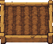
荒地刚写下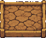
缺肥缺信息backlog。缺肥是工单上的一个标记（它有没回答的问题），不是新状态。安排活
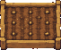
播种排队或刚派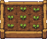
发芽开始干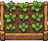
长叶改了东西todo（种子袋排在院门外）→ in_progress。完成
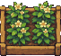
抽穗等验收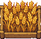
结果过了验收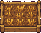
收获合进去或关上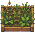
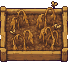
in_review 就是「等验收」；过了验收是「结果」，收获以后 done。二、对照表状态、地、牌子、该谁动手
| 地 | 叫法 | 阶段 | 工单状态 | 牌子 | 现在该谁动手 |
|---|---|---|---|---|---|
| 荒地 | 聊清楚 | backlog | 你或管家：说清楚要什么 | ||
| 缺肥 | 聊清楚 | backlog + 有没回答的问题 | 缺肥 | 你：回答问题（施肥） | |
| 播种 | 安排活 | todo | 排队中 | 农场：有空地自动开工 | |
| 发芽 / 长叶 | 安排活 | in_progress | 帮工 | ||
| 干裂 | 安排活 | in_progress + 很久没动静 | 没动静 | 你：浇水，或叫停 | |
| 抽穗 | 完成 | in_review | 等验收 | 验收的人（见第五节） | |
| 长草 | 完成 → 回到安排活 | in_progress + 验收意见 | 3 棵草 | 帮工：照意见修 | |
| 长虫 | 安排活 | in_review，最后一轮失败 | 有虫 | 你：杀虫（让它接着修） | |
| 结果 | 完成 | in_review + 验收过了 | 可收获 | 你：收获 | |
| 麦茬 | 完成 | done | 进仓库 |
只加两样东西：「验收过了没有」和「没回答的问题」。工单的六个状态不变，in_review 的意思收窄成「等验收」。
三、农活每样工具就是一件对工单做的事
派活：把工单挪到待办；点一个帮工头像拉它下地（和在田头 @ 它一样）。
补信息：回答帮工问的，补上验收标准。聊清楚这一段的农活。
带话：对整张工单说一句，地上的人都听得到；干裂的地浇一下就醒。
照验收意见修：一棵草一条意见；也能点一棵草单独交代怎么修。
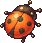
这一轮失败了：让它带着出错的原因接着修。
验收过了的地：合进主分支、提 PR，或者（不是代码活）直接关上。
不要了：叫停地上的人，工单挪到已取消；分支上有提交就留着。
验收：站到抽穗的地里，按这块地的验收方式验（见第五节）。
四、一块地上的人不一定只有一个帮工
在田头 @ 谁，就是叫谁下地。一块地上可以有好几个，但锄头只有一把：谁拿着锄头谁改代码（一块地一个 worktree，两个人同时改会打架）。别人能看、能说、能把意见交给拿锄头的。不是代码活就没有锄头这回事，大家都能动手。
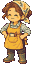
管家拉人、分活、催站在田埂上每一轮干活标着是谁干的，收成清单里每个提交带着名字，账本按人记功劳。锄头传了几次、现在在谁手上，地块详情里看得到。
五、验收每张工单都有；谁验、怎么验按工单定
你看一眼
最轻：你看过改动，点收获就是过了验收。小改动、文档活的默认。
跑检查
项目的 .vibevalley/check，或这张工单写下的检查命令；全过才结果，没过的每一项是一棵草。
派一个看地的
另一个帮工读工单的验收标准和改动，逐条打勾，挑出来的每条是一棵草。
必须你点头
最重：检查和看地的都过了，还要你点「验收通过」才结果。上线、改数据这类。
验收标准（聊清楚时写下）
issue status 挪状态没过验收：三棵草
- IssueStatus 的错误没带原因 — 已修，拔掉了
- 看板拖到「处理中」还在调旧的 start
- server.md 没写 moves 字段
六、地块详情农场点地、看板点卡片，打开的都是它
按三段排。最上面一条进度轨标出走到哪；紧接着一块「这块地现在需要你」，只放一件事和一个主按钮；下面三块对着三段，最后是折起来的干活过程。
#12 改状态就是派活
等验收 vibevalley · vibevalley/issue-12检查全过；看地的打了 3 个勾、1 个拿不准，交给你看。
聊清楚
验收方式：派一个看地的 + 跑检查 · 验收标准 4 条（3 过，1 拿不准）
安排活
worktree
worktrees/vibevalley.12 · 分支 vibevalley/issue-12
完成
草：1 棵拔了，0 棵剩下 · 收获方式：合进 main（这个项目没开 PR）
干活过程
不是代码活的地
比如「写本周周报」「查一下为什么昨天账单变高」。没有 worktree、没有分支、没有锄头；「安排活」那块只列谁在干；验收默认「你看一眼」，收获就是关上。地还在岛上，只是岛上没有它的篱笆院子。
「需要你」只放一件事
缺肥：回答问题；干裂：浇水或叫停；长虫：杀虫；等验收（你来验）：验收通过 / 写意见；结果：收获；冲突：让它解决。没有要你做的，这块就不出现。这一条由服务端算（和手机来电是同一份规则），客户端只画。
七、数据上要加什么形状写在 protocol，规则都在服务端
| 加什么 | 放在哪 | 为什么 |
|---|---|---|
验收方式 acceptance：看一眼 / 跑检查 / 看地的 / 必须你点头，可以叠加 | Issue | 每张工单都有验收，怎么验按工单定 |
验收标准 criteria：几条话，每条过 / 没过 / 拿不准 | Issue | 聊清楚时写下，验收时逐条打勾 |
验收结果 verdict 和草 findings：每条意见一棵，拔了的记着 | Issue（或一张 issue_finding 表） | 没过验收回到长叶，修完一条拔一棵 |
没回答的问题 asks | Issue | 缺肥由它算；回答就是施肥 |
地上的人 crew：主种、帮手、看地的；锄头在谁手上 | Issue（帮工还是 Session，一张工单可以有几个） | @ 谁就是叫谁下地；一块地一把锄头 |
地的样子按工单算：PlotOfIssue | protocol/game_view.go | 现在按帮工的阶段算；以后看工单的阶段、验收和地上的人 |
「这块地需要你」NeedOfIssue | protocol，和 Inbox 同一份 | 详情顶上那一块和手机来电说的是同一件事 |
八、还要你定的
- 验收方式的默认值：代码活默认「跑检查 + 你看一眼」，非代码活默认「你看一眼」？还是按项目设默认？
- 看地的是谁：管家挑一个和主种不同的档案，还是专门有一个「验收员」档案？
- 锄头怎么传：主种交回这一轮就自动放下锄头，下一个被 @ 的接过；还是你（或管家）手动交给谁？
- 缺肥谁来判：帮工在汇报里写「要问主人：……」就算一个问题；还是管家在聊清楚这一段读工单串来判？
- 先做哪块：建议先做验收（抽穗、结果、长草和稻草人），它最能把「交回来」和「做完了」分开；再做缺肥，最后做几个人一起种。